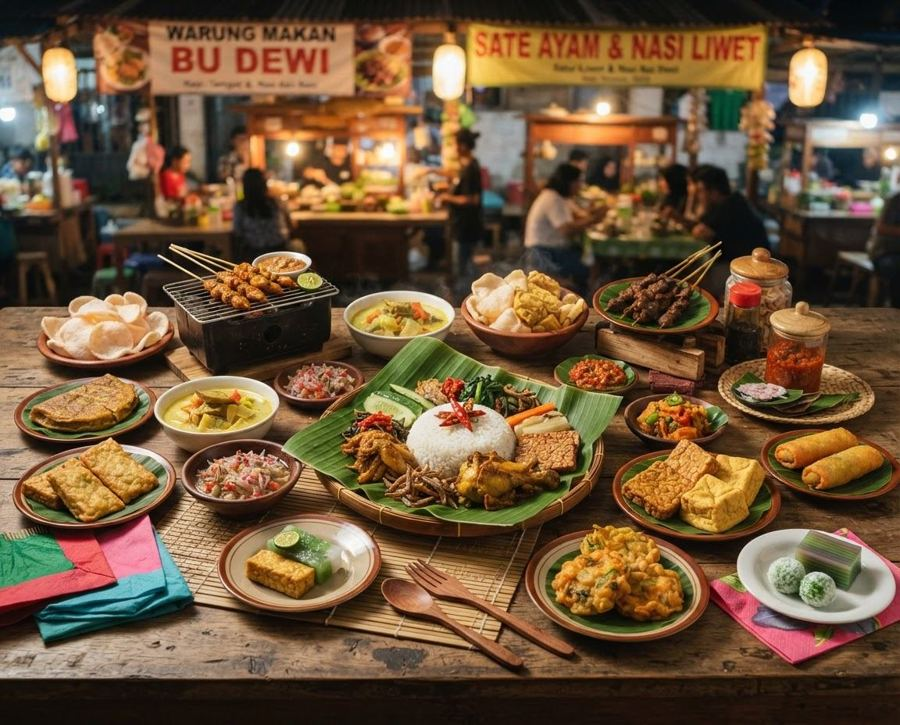

Jelajahi Kuliner Solo Tanpa Ribet
Jelajahi rasa, temukan cerita di setiap sudut Solo. Cari makanan, harga, porsi, stok, promo, dan informasi penting dalam satu tempat.

100+ Tempat MakanPilihan Kuliner Solo
Legendaris, murah, dan favorit wisatawan.
Temukan lokasi tempat makan
Lihat tempat makan terdekat dari posisimu.